Activation Path Compare
Each category includes base and target top-k activation heatmaps, an aligned difference heatmap using base neuron ids, adjacent-layer cosine similarity strips, and the corresponding similarity difference strip.
original_prompt
Base Top-k Heatmap
Rows are layers in forward order. Columns are top-k ranks. Colors show signed mean activation values.
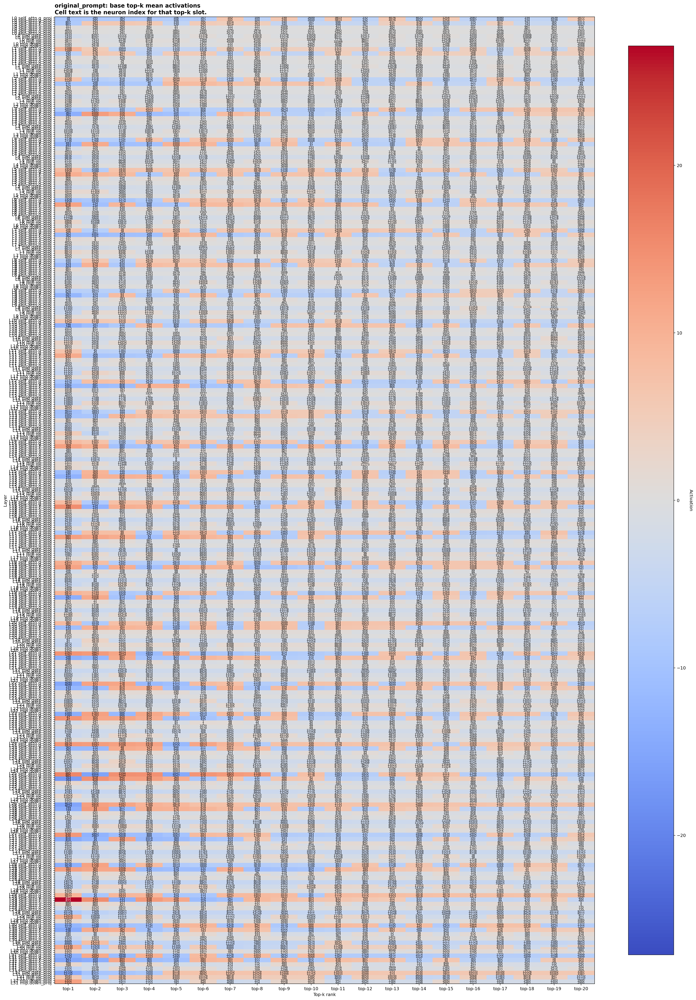
Target Top-k Heatmap
Target model's own top-k mean activations. This exposes shifts in the dominant neurons after adaptation or pruning.
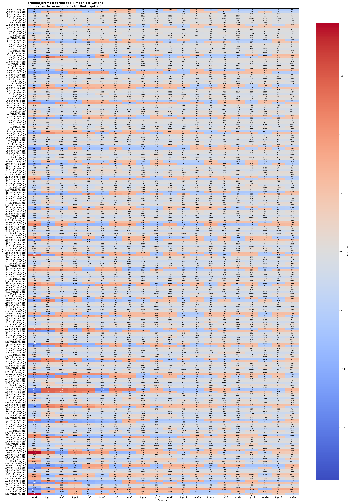
Aligned Difference Heatmap
For each layer, target values are read at the same neuron ids selected by the base model top-k ranking.
Base Adjacent-layer Similarity
This strip compares adjacent layers using fixed-length top-k activation profiles, so it remains valid even when module widths differ.
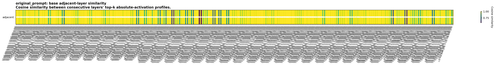
Target Adjacent-layer Similarity
Use this together with the base strip to see whether the forward activation path becomes smoother, noisier, or rerouted under the same fixed-length profile metric.
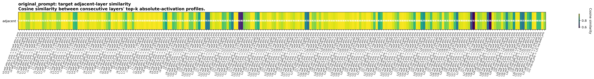
Similarity Difference
Positive cells indicate the target model preserves or sharpens the transition more strongly than the base model.
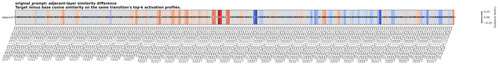
paraphrase
Base Top-k Heatmap
Rows are layers in forward order. Columns are top-k ranks. Colors show signed mean activation values.
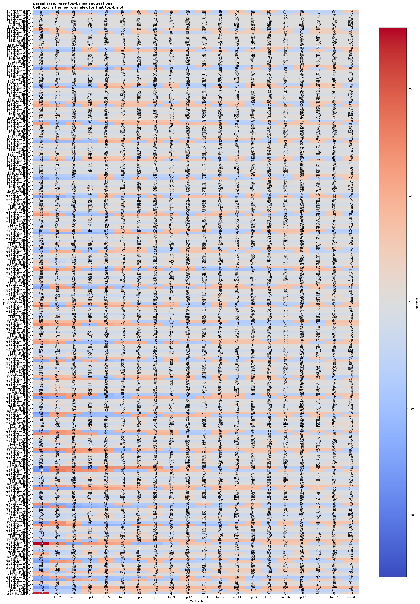
Target Top-k Heatmap
Target model's own top-k mean activations. This exposes shifts in the dominant neurons after adaptation or pruning.
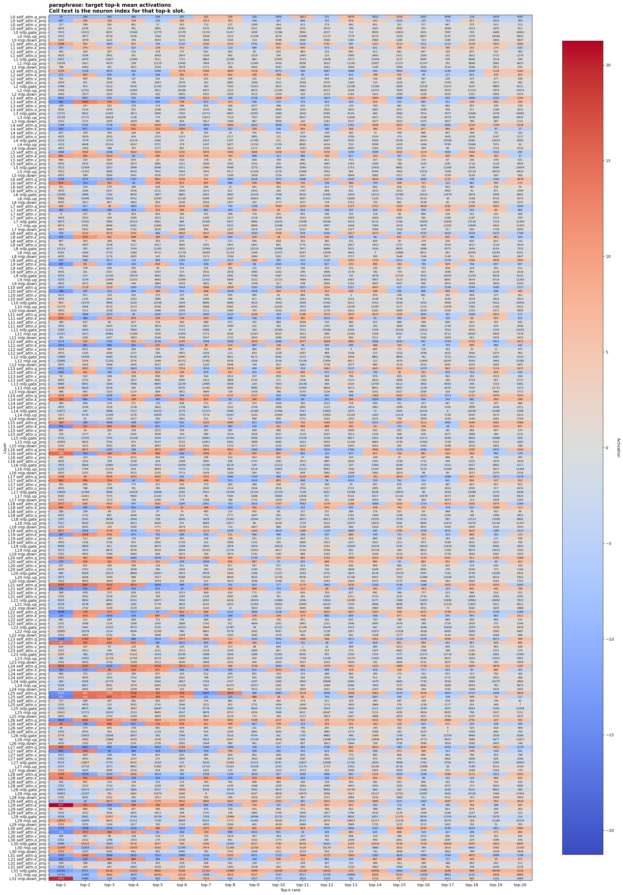
Aligned Difference Heatmap
For each layer, target values are read at the same neuron ids selected by the base model top-k ranking.
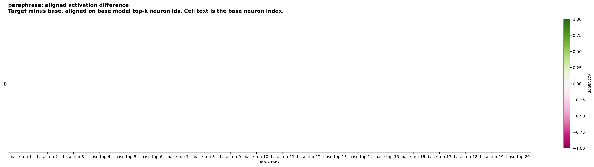
Base Adjacent-layer Similarity
This strip compares adjacent layers using fixed-length top-k activation profiles, so it remains valid even when module widths differ.
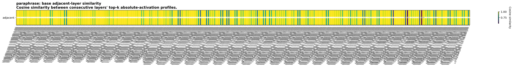
Target Adjacent-layer Similarity
Use this together with the base strip to see whether the forward activation path becomes smoother, noisier, or rerouted under the same fixed-length profile metric.
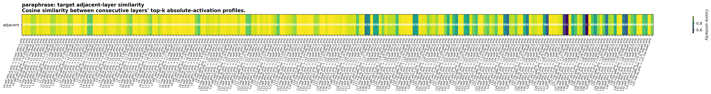
Similarity Difference
Positive cells indicate the target model preserves or sharpens the transition more strongly than the base model.
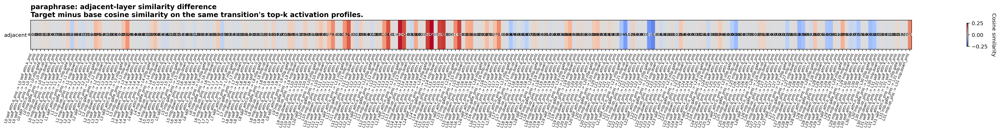